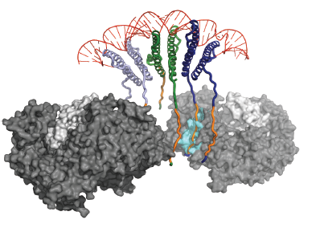

Assembly and evolution of RNA-protein complexes and virus-host interactions

The Frankel Lab focuses on RNA-protein recognition and the assembly of RNA-based regulatory complexes. We use biochemistry, structural methods, proteomics, and virology to investigate two essential regulatory complexes in HIV: the viral Tat protein and its interactions with the host transcription machinery, and the viral Rev protein and its interactions with host nuclear export complexes. In concert with proteomic studies of HIV-human protein complexes, our studies have led to an understanding of how the virus has evolved adaptable protein interfaces to hijack these two host machines and establish a unique regulatory circuit that drives gene expression during the HIV life cycle.